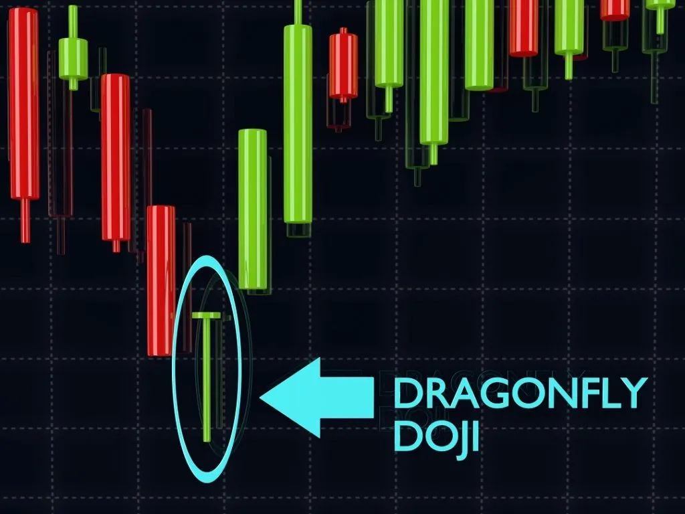
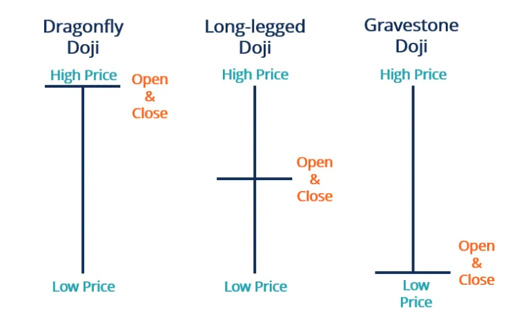
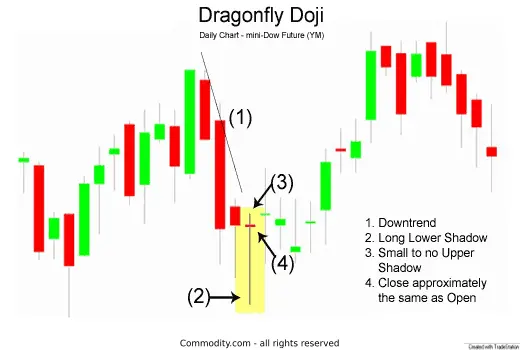
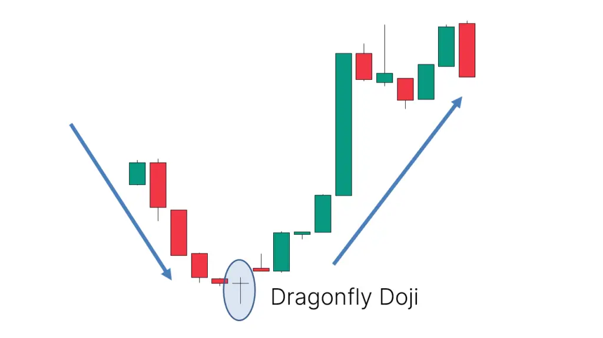

A dragonfly doji candlestick is a candlestick pattern with the open, close, and high prices of an asset at the same level. A dragonfly doji pattern does not appear constantly. It is used as a technical indicator that signals a potential reversal of the asset’s price.
| What Does the Dragonfly Doji Look Like? |
The Dragonfly Doji chart pattern is a “T”-shaped candlestick that’s created when the open, high, and closing prices are very similar. Although it is rare, the Dragonfly can also occur when these prices are all the same. The most important part of the Dragonfly Doji is the long lower shadow.

Summary
| What Does a Dragonfly Doji Candlestick Tell? |
A dragonfly doji is considered a signal of a potential reversal in the security price. It occurs when the open, close, and high prices of a security are virtually the same. Thus, a dragonfly doji is T-shaped without an upper tail, but only a long lower tail.

The long lower tail of a dragonfly doji indicates that large amounts of selling have flooded the market, which caused downward pressure on the security price during a certain period. However, at the end of that period, the close price is still able to stay at the level of the open price. It suggests that buyers in the market are able to absorb this much selling and pull back the price.
A dragonfly doji can be an indicator of a reversal in price. When the price of a security has shown a downward trend, it might signal an upcoming price increase. It is a bullish dragonfly in this case. If the candlestick right after the bullish dragonfly rises and closes at a higher price, the price reversal is confirmed, and trading decisions can be made.
Conversely, when the market has shown an upward trend before, a dragonfly doji might signal a price drop, known as a bearish dragonfly. The downward movement of the next candlestick will provide confirmation.
Traders can use a dragonfly doji to make trading decisions. They usually create orders right after the confirmation candlestick appears. A trader can long a stop loss below the low of a bullish dragonfly or short a stop loss above the high of a bearish dragonfly.
| How to Interpret the Dragonfly Doji |
How to Interpret the Dragonfly Doji

| What Does a Dragonfly Doji Mean? |
In Chart 2 above of the mini-Dow, the market began the day testing to find where demand would enter the market, found support for the low price, but indicated a possible transition to an uptrend. The Dragonfly should be verified by waiting for trend confirmation on the following day.
